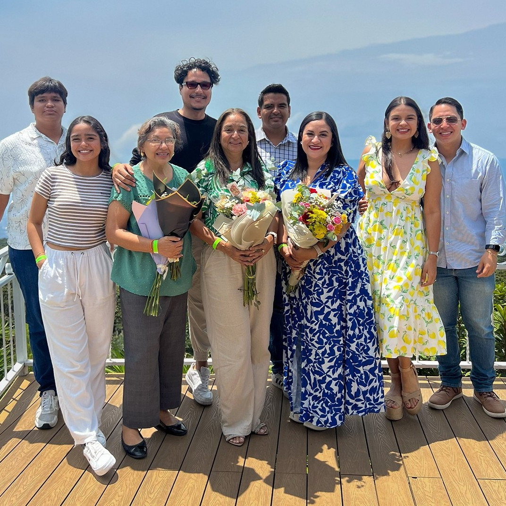

Conócenos un poco más

Todo comenzó en 2009, cuando abrimos nuestras puertas como Café San Cristóbal con una carreta, unas cuantas bancas y una mesa de cemento. Vendíamos café, chocolate y pan dulce, siendo el único lugar cerca del Boquerón que ofrecía algo caliente para combatir el frío del volcán.
Con el tiempo, nuestros clientes nos fueron pidiendo más: pupusas, yuca, sopa de gallina india, carnes asadas... y nosotros, con energía, juventud y pasión, fuimos creciendo al ritmo de sus deseos. Así, poco a poco, la carreta se convirtió en lo que hoy es Finca San Cristóbal.
Hoy somos un restaurante familiar ubicado a 1,680 metros sobre el nivel del mar, con una manzana de extensión, senderos naturales, cafetales propios y una vista inigualable de San Salvador.
Año de fundación
Sobre el nivel del mar
De extensión natural
Lunes a Domingo
Nuestro café es cultivado, procesado y servido en el mismo lugar. Un café con historia, tierra volcánica y manos que lo trabajan con amor.
Platillos tradicionales salvadoreños como sopa de gallina india, carnes al carbón, chicharrones, pupusas y antojitos por la tarde.
Una terraza con vista espectacular de San Salvador, el lago de Ilopango y parte de las costas salvadoreñas. Ideal para ver los atardeceres.
Recorre nuestros senderos entre vegetación del volcán y cafetales. Conoce el proceso del "grano de oro" desde la planta hasta tu taza.
Despierta entre nubes, cafetales y silencio. Tu escape soñado a solo 15 minutos de San Salvador. Disponibles en Airbnb.
Un lugar tranquilo para toda la familia, con jardines, áreas infantiles y el mejor clima fresco del volcán El Boquerón.